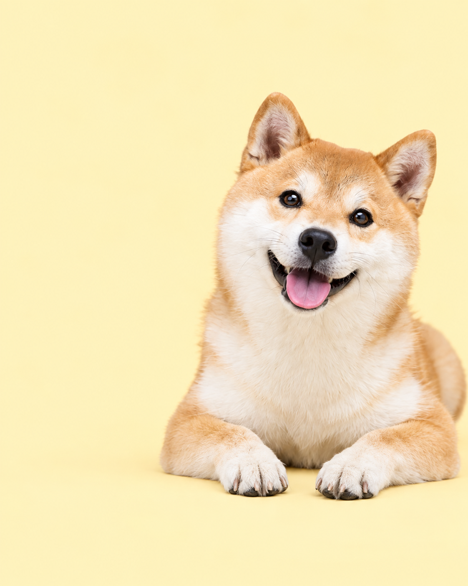
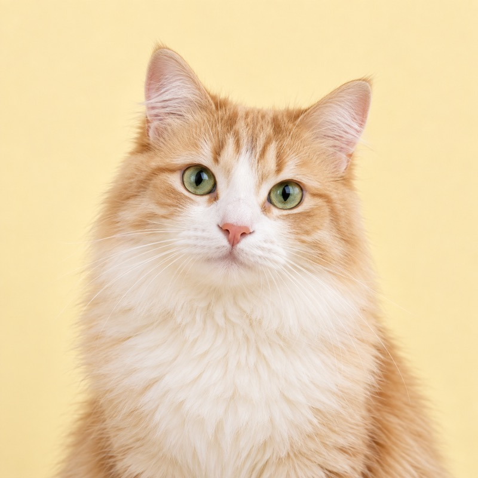

给毛孩子，也给爱它的你
把爱，
放进每一天。
一顿饭、一次散步、一点点长大。
用爪伴记住日常，让全家一起，把它照顾好。
Android 优先体验 · 开发预览阶段
LITTLE PAWS. EVERYDAY LOVE.
♡ 有你在，就很安心
✳
从日常，到成长日常照护✳健康记录✳家庭协作✳珍藏回忆
MADE FOR YOUR EVERYDAY
照顾它的事，
一件件，安排妥当。
少一点“是不是忘了”，
多一点安心相伴的时间。
01 / 日常照护每天的小事，
都有着落。
喂食、散步、驱虫，一件件安排好。重复计划与本地提醒，让照护进度随时可查。
毛豆的一天 示例
☀早餐时间08:00 · 每天已完成
♧一起去散步18:30 · 每天待照护
成长的每一步，
都值得记下来。
整理体重、疫苗和就诊记录。需要时导出健康档案，让下一次照护交接更从容。
了解健康档案 ↗
03 / 陪伴回忆平凡的一天，
也是珍贵的一页。
留下照片与心情，把相伴的日子收进回忆录。那些可爱的小瞬间，随时都能翻看。

今天的阳光，和你一样好。 回忆示例
OUR LITTLE FAMILY 示例
照顾它，是我们一起的事。
我家伴
BETTER, TOGETHER
一个小家，
一起用心。
邀请家人加入同一个家庭，共享宠物档案，分配照护事项。谁完成了、接下来做什么，都有记录可循。
开启你们的陪伴日常 ↗FOR EVERY KIND OF FAMILY
不同的日常，一样的用心。
你可能还想知道
可以和家人一起使用吗？
可以。每位家人使用自己的账号，通过家庭邀请加入，共同查看宠物资料，并按成员权限参与日常照护。
爪伴现在可以下载吗？
当前仍在开发预览阶段，尚未提供公开 APK 或 DMG。安装包发布后，本页会显示版本信息和下载入口。
照护提醒是怎么工作的？
照护计划使用设备本地通知，需要允许通知权限。提醒表现可能受设备系统设置影响；家庭记录在应用前台同步。
健康记录可以导出吗？
可以将选定日期范围内的健康记录导出为 PDF 或 CSV，用于就诊或寄养交接。健康记录用于整理信息，不提供诊断或用药建议。